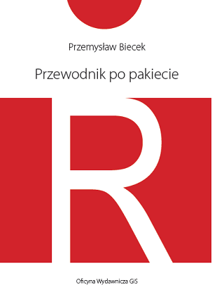
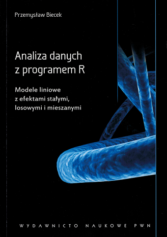
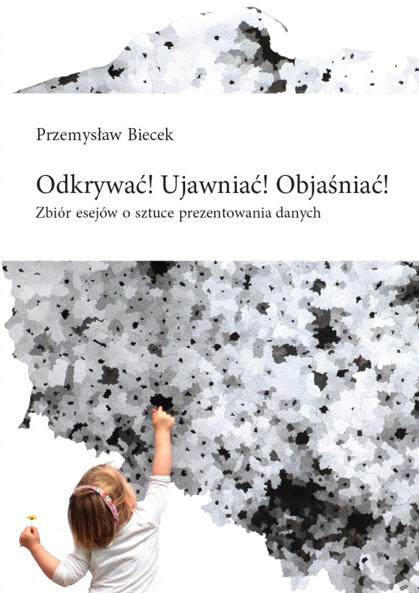

 ,,Przewodnik po pakiecie R’’ was my first book. I wrote it in 2007. The first edition was 350+ pages long guide for R language, applied statistics and graphics. It was published in 2008 and now after few years it has 4 major editions. Every few years the book is being updated as the R language evolves. It was fun to write this book it was a first polish book about R and I still get some warm emails about it.
My adventure with R continued. In 2008 I’ve started a R community in Wroclaw (WZUR) after few years I’ve started a community in Warsaw SER which has now more than 1700+ participants on Meetup.
In 2015 I’ve created a massive online open course for R PogromcyDanych and more than 4000 people took part in it.
Find additional materials, errata’s and other sources here: http://biecek.pl/R/.
 In the pre-habilitation period I did a lot of studies related to linear and mixed models mostly with collaboration with people from other areas like medicine, oncology or genetics. These collaborations result in lots of interesting use-cases. So in 2011 I gathered selected projects and used them as a skeleton for the ,,Analiza danych z programem R’’ book, a companion over linear models with fixed, random and mixed effects.
My interest in mixed models started with lectures of prof. Witold Klonecki, my advisor. It’s a very useful set of modeling techniques. Yet these methods are not present in the academic programs in Poland. Thus I hope that this book will introduce them to larger number of data scientists.
Find additional materials, errata’s and other sources here: http://biecek.pl/R/#Analiza.
 ,,Eseje o wizualizacji danych’’ is my most recent book. It’s devoted to data visualization from the point of view of a statistician. It was an very interesting project. I self published this book and make it freely available on web http://biecek.pl/Eseje/. It was a risky project in 2013 but no I think it was worth it. Lots of interesting experience, many interesting discussions and collaborations initiated from this. It has a single chapter devoted to Grammar of Graphics that is linked with a single tool. But all other chapters are tool agnostic, they present philosophy and joy that results from good statistical graphics.
Find additional materials, errata’s and other sources here: http://biecek.pl/R/#Eseje.
In my free time I am blogging, mostly about statistics, interesting conferences, events or sources. Recently I am blogging about my experiences as an academic teacher. Content of this blog vary a lot as also my interests.
Find the blog here: http://smarterpoland.pl